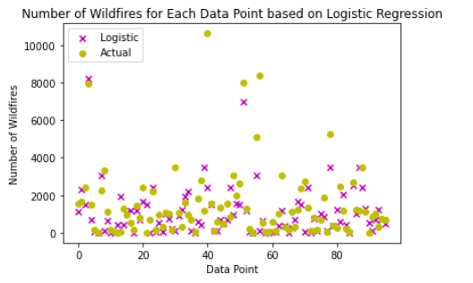

In an era of climate change, wildfires have become a focal point of study - particularly for the West Coast. Trends for recent years have not shown much change in the total amount of fires, but they have shown an increase in the amount of land burned by these fires (Wildfire Statistics). The implications can be severe: deforestation, homelessness, and increased carbon emissions, among others.
While it is unlikely that wildfires are preventable, with appropriate action, the damages done can be reduced. To do this, there needs to be proactive action in conjunction with better indicators for wildfire risk. Our project sought to identify these variables and created two predictive models to classify the susceptibility of a state to wildfires. Note that in the scope of this work, susceptibility is directly related to the total number of fires in a specific location. Consequently, the variables were used to create a predictive model that predicts the number of wildfires in a state. Ideally, these results yield meaningful data regarding wildfire severities and frequencies which can be used to schedule and allocate fire prevention resources more effectively.
To collect data, major physical and environmental factors were brainstormed and analyzed using intuition as well as research into existing wildfire papers. Specifically, Chas-Amil M.L’s paper, Natural and Social Factors Influencing Forest Fire Occurrence at a Local Spatial Scale, was a particularly helpful source for determining several factors that were connected to wildfires[1]. Analysis of the paper led to the decision that datasets for the following factors should be collected: temperature, precipitation, humidity, biomass, wind, and human factors.
The first three factors, temperature, precipitation, and humidity were collected for each of the mainland United States on a monthly basis for the timeframe of 2011 to 2020[2]. Alaska and Hawaii were excluded due to their significant spatial disconnect from the rest of the states in addition to having distinct habitats (tundra and tropical island respectively). When considering a mechanism to capture biomass data, forest coverage was chosen[3]. This metric was used on a per state basis and assumed to be consistent across the timespan. The assumption of consistency is reasonable because at the level of state with only a 10 year range there is likely relatively minimal changes to the amount of forestland in each respective state. Wind datasets were found; however, there was a large price to obtain these datasets. Due to budgetary constraints, wind was ultimately excluded from the model. Finally, human factors is a relatively broad term. As such, the population of each state for each year was selected to represent this feature[4]. This parameter is a decent estimate given that statewide data was scarce for other “human factors”.
Table 1, shown below, details each variable used and provides a brief description. Note that some variables were derived from a single dataset. For example, max temperature was calculated on a yearly basis from the same data set that average temperature was calculated.
In order to build a predictive model, labels were needed for the purpose of training and prediction. To do this, annual reports for each year from 2011-2020 published by the National Interagency Coordination Center were utilized[5]. These reports gave wildfire counts on a state by state basis for the intercontinental U.S. for each year.
With labels and features for each state each year across a ten year period utilized, processing and cleaning of the data was performed.
These data were all implemented into different sheets and then fully compiled into one sheet to be exported as a CSV file for ease of use with code. The CSV file was imported into clean.py along with the Pandas module. The read_csv() function provided a convenient way to organize all these data into a dataframe. When importing the CSV file, a couple features of the data were incorporated as strings rather than numerical values (int, float, etc.), which were more desirable to model with. Strings would cause problems within the model as the object values would not be feasible for numerical modeling.
Each feature and label was processed in order to eliminate any string objects (and thus turning them into integers or floats) and then incorporated into numpy arrays. To do this, we had a series of conditionals for each feature and the label to check if the column datatype of the dataframe was designated “object”. If so, then the dataframe column values were translated into a list using the toList() function in Pandas then the list was iterated through to eliminate all commas. This list was then translated into a numpy array. If the dataframe column type was not designated “object,” then the dataframe column was incorporated into a numpy array using the to_numpy() function in Pandas. Once the numpy arrays have been created for each list, we implemented a newaxis to each array, specifically to concatenate the features with each other to create a 2-D features matrix using the concatenate() function in numpy. At the end of the data cleaning process, the labels were processed into a (480,1) shape numpy array and the features were processed into a (480,12) numpy array. We had a designated python file for cleaning this data and preparing the matrix for the coding files which implemented our modeling.
With the data cleaned, a correlation matrix (Figure 1) was made by plotting the correlation output between each parameter using the built in correl() function of Google Sheets. The output was a 12 by 12 matrix with each entry corresponding to the correlation between its respective row and column variable. For this reason, the diagonal values were 1, and the matrix is symmetric across the diagonal.
It seemed reasonable that some of the parameters might be connected. For example, temperature might be related to precipitation. It was found that population was the most correlated parameter with the outcome number of wildfires, with a value of .679. Additionally, humidity was related to precipitation with a correlation of .664. Finally, forest cover was found to be closely related to precipitation as well. The output of this matrix signaled that dimensionality reduction could be useful for the model.
Due to the plethora of variables that can go into the creation of forest fires previously stated, dimensionality reduction using PCA was implemented to shrink the number of dimensions in the model, thus simplifying it, while still maintaining effectiveness (Chas-Amil et al). The fit and transformation of the dataset was calculated using the PCA class from the skLearn.decompossion module, and reduced the data down to eight principle components. The explained variance for each principal component was then found and summed across the components to ensure 95% of the explained variance was accounted for in the model. This new dataset was then used in different regression models to test the accuracy of the model. Afterwards, an unsupervised learning model to cluster the susceptibility levels of counties in our study area.
Our evaluation will lead to a label of ranges across the study area depicting the susceptibility levels of wildfires in respective counties. These levels will then be clustered to help identify larger trends among the variety of societal and environmental factors we intend on surveying. Once these larger trends are established, we will look into the primary reason that these regions are overwhelmingly susceptible and attempt to identify appropriate action to reduce these susceptibility index scores in the future.
The goal when running PCA was to reduce the number of inputs while still accurately representing the dataset. In order to maintain the integrity of the data, 95% of the explained variance needed to be accounted for after the reduction took place.

This above graph led to the conclusion that it was possible to safely reduce four dimensions and still maintain the integrity of the data. Below is a matrix showing how each principal component contributed to the total expected variance.

The predicted classifications for wildfires were compared to the actual wildfire statistics for the testing data through both a Root Mean Square Error (RMSE) and R2 using mean_squared_error and r2_score functions from sklearn. After normalizing the data in both the predicted amount of wildfires and actual amount, the RMSE was determined to be 0.38, with an R2 of .16 determined from the original, non-normalized values. The results, shown in Figure 9, can be seen comparing the 96 points used in our test data and the logistic regression classifications (shown in magenta) as well as the actual wildfire amounts for each data point (shown in yellow). The logistic regression failed to account for a considerable number of outliers, in turn leading to the weaker RMSE and R2.
The data collected by our group was based on the most meaningful factors that were available publicly that could help predict wildfire amounts and susceptibility. While some of the features of data were not as readily available as other features, we were able to efficiently incorporate all of the data that we found in order to utilize them effectively in our model. Our models we implemented were effective in undergoing more efficient predictions or providing insightful predictions themselves. Our final results show generally accurate predictions of both the susceptibility of wildfires through classification and the number of wildfires predicted through linear regression. With our methods, this meaningful predictive analysis will lead to more efficient resource allocation and scheduling routines to help fight and prevent wildfires.<\p>
While a bulk of our modeling implementations are complete, there are still a couple things we would like to potentially implement in the future. One main thing we would like to implement is to utilize logistic regression using the reduced features matrix from PCA.<\p>
With wildfires becoming a more paramount concern in recent memory, it is imperative that organizations dedicated more sophisticated efforts to the alleviation of wildfires. Our predictive models were designed with the intent of contributing to this cause. While there were obstacles present, the potential outcome is meaningful: having a means to predict wildfire impact can save property, the climate, and ultimately, lives.<\p>
Chas-Amil, Maria Luisa; Touza, Julia M.; Prestemon, Jeffrey P.; McClean, Colin J. 2012. Natural and social factors influencing forest fire occurrence at a local spatial scale. In: Spano, Donatella; Bacciu, Valentina; Salis, Michele; Sirca, Costatino (eds.). Modelling Fire Behavior and Risk. Global Fire Monitoring Center: Freiburg, Germany, 181-186.
Climate at a glance. (2021, February). Retrieved March 01, 2021, from https://www.ncdc.noaa.gov/cag/county/mapping.
Wildfire Statistics. (2021, January 04). Retrieved March 01, 2021, from https://crsreports.congress.gov/.